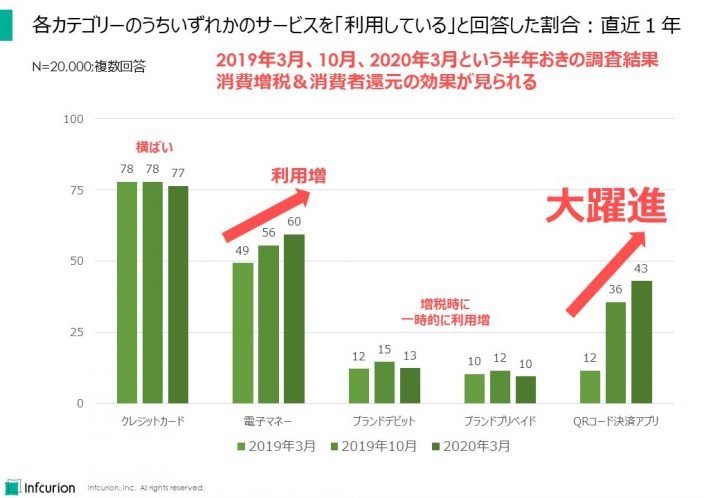
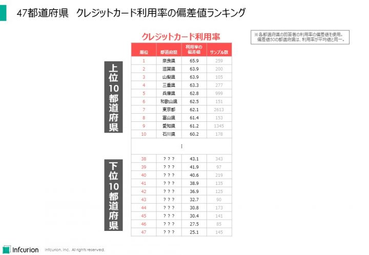
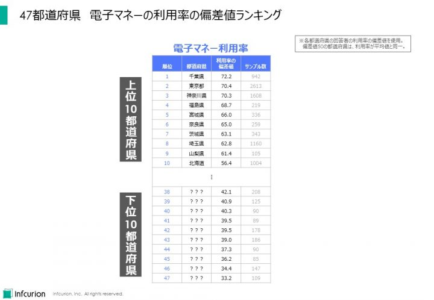
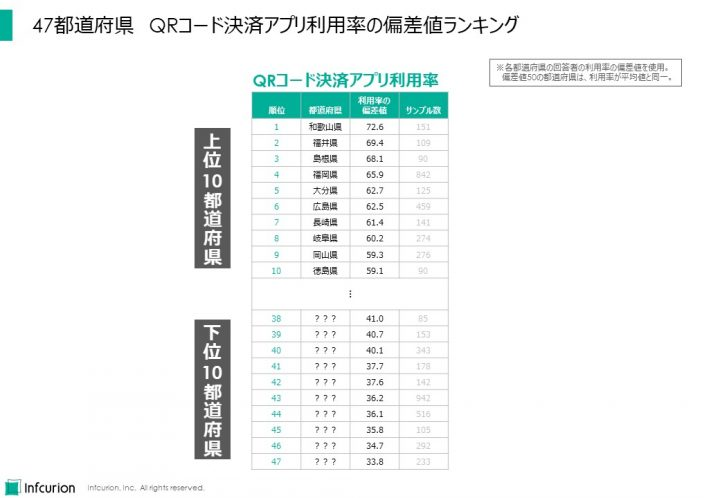

前回記事「日本のキャッシュレス決済の状況」に続きまして今回も、当社独自の「決済動向調査」から一部を紹介します。過去に実施してかなりの関心を集めた、都道府県ランキングです！
まずは全国での利用率のおさらい
前回記事で紹介したとおり、日本の消費者における利用率が高い決済サービスは、1位がクレジットカード、2位が電子マネー、3位がQRコード決済アプリとなっています。
当社調査では、クレジットカードは利用率77%程度を常に維持している大御所。しかし逆に、調査開始からの数年間での成長も見られない、成熟サービスです。
電子マネーは直近一年間で利用率が急上昇し、最新調査での利用率は60%。消費増税におけるポイント還元の受けやすさがプラスに働いた模様です。
ちなみに当社調査では以下のサービスを「電子マネー」としています：交通系IC、WAON、nanaco、楽天Edy、iD、QUICPay、PiTaPa。
読者によっては「これは電子マネーではないのでは？」と思うものが混じっているかもしれませんが、細かく分けると逆に一般消費者に理解できなくなりますので、当社調査ではこれらを「電子マネー」としています。
QRコード決済アプリは1年間で利用率30ポイント以上アップし、43%に達しています。劇的な急拡大です。

各カテゴリーのうちいずれかのサービスを「利用している」と回答した割合：直近１年
全国の回答者2万人を対象とする結果は上記のとおりですが、キャッシュレス決済の浸透度は地域によってバラツキがあります。
そこで今回は、都道府県ごとの、クレジットカード／電子マネー／QRコード決済アプリの浸透度を見てみることにします。
サンプルは全国調査の2万人ですが、回答者を居住地の都道府県に割り振ることで、各都道府県のキャッシュレス決済サービスの利用率を算出します。利用率は、当該都道府県の回答者における利用者の割合です。都道府県ごとにサンプル数がバラバラである点には留意ください。
クレジットカード利用率ランキング
まずはクレジットカードのランキング。都道府県の相対的なクレジットカード利用度合いを可視化するため、利用率の数値そのものではなく、利用率の偏差値を使用しています。以下の結果になりました。

47都道府県 クレジットカード利用率の偏差値ランキング
クレジットカード利用率の偏差値トップ１０は、奈良県（65.9）、滋賀県（63.9）、山梨県（63.9）、三重県（63.3）、兵庫県（62.8）、和歌山県（62.5）、東京都（62.1）、富山県（61.4）、愛知県（61.2）、石川県（60.2）、という結果となりました。
また、下位１０都道府県を見てみると、偏差値が30を下回っている都道府県が２つもあります。もしかしてカード加盟店が少ないのだろうか、などと考えさせられます。
電子マネー利用率ランキング
次は電子マネー。利用率のレンジはクレジットカードと異なりますので、比較を容易にするためにこちらも利用率の偏差値です。

47都道府県 電子マネーの利用率の偏差値ランキング
偏差値トップ１０は、千葉県（72.2）、東京都（70.4）、神奈川県（70.3）、福島県（68.7）、宮城県（66.0）、奈良県（65.0）、茨城県（63.1）、埼玉県（62.8）、山梨県（61.4）、北海道（56.4）、です。首都圏の３都道府県は偏差値70を超えました。電子マネーが特に便利な地域ということなのかもしれません。
QRコード決済アプリ利用率ランキング
最後に、QRコード決済アプリ利用率の偏差値ランキングです。

47都道府県 QRコード決済アプリ利用率の偏差値ランキング
トップ１０は、和歌山県（72.6）、福井県（69.4）、島根県（68.1）、福岡県（65.9）、大分県（62.7）、広島県（62.5）、長崎県（61.4）、岐阜県（60.2）、岡山県（59.3）、徳島県（59.4）。
クレジットカード・電子マネーではトップ１０にまったく現れなかった九州・中国・四国ですが、QRコード決済アプリでは九州から3県、中国からも3県、四国から１県がトップ１０入りしています。また、大都市圏が上位に現れないのも驚きです。従来はキャッシュレス加盟店の少なかった地域で、QRコード決済アプリがキャッシュレス化を牽引しているのではないか？などと考えると、心強く感じられますね。
振り返り
「キャッシュレス化」と一口に言っても、クレジットカード／電子マネー／QRコード決済アプリ、などキャッシュレス決済手段も様々。地域ごとにも、その浸透度には特色が見られるようです。もちろん、同じ都道府県の中でも、都市部と郊外では異なる特徴があるはずです。
いずれにせよ、日本のキャッシュレス化は全国で一様に進んでいるわけではないようです。地域の特色を踏まえた、地域ごとのキャッシュレス施策が求められているようです。
※ＱＲコードはデンソーウェーブの登録商標です。
関連記事
- 「決済ビジネスを通した地域経済活性化への貢献」、インフキュリオン・インサイト、2015年2月17日


{kind=link}
{kind=link}
{kind=link}
{kind=link}